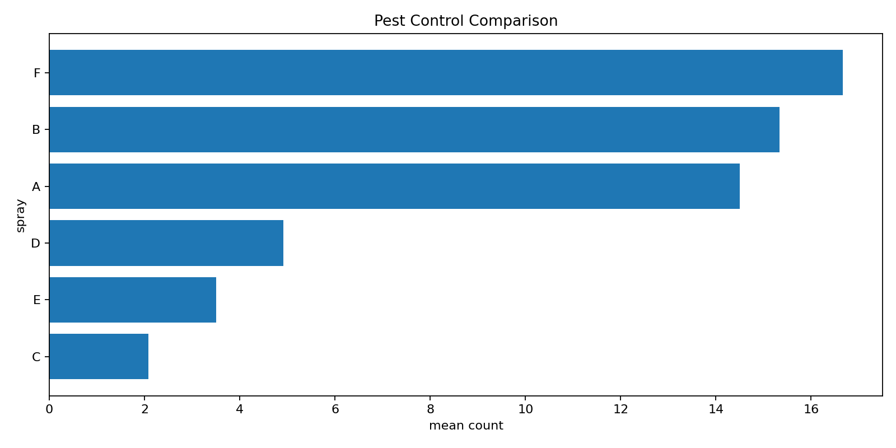

How do observed insect counts differ by spray?
The largest observed mean count is 16.667 for F. This ranking is descriptive, not a recommendation.

| segment | rows_used | metric | minimum | maximum |
|---|---|---|---|---|
| A | 12 | 14.500000 | 7 | 23 |
| B | 12 | 15.333333 | 7 | 21 |
| C | 12 | 2.083333 | 0 | 7 |
| D | 12 | 4.916667 | 2 | 12 |
| E | 12 | 3.500000 | 1 | 6 |
| F | 12 | 16.666667 | 9 | 26 |
Lower counts indicate better observed control; experimental context limits transfer.
Compare safety, cost and repeatability before choosing a treatment.